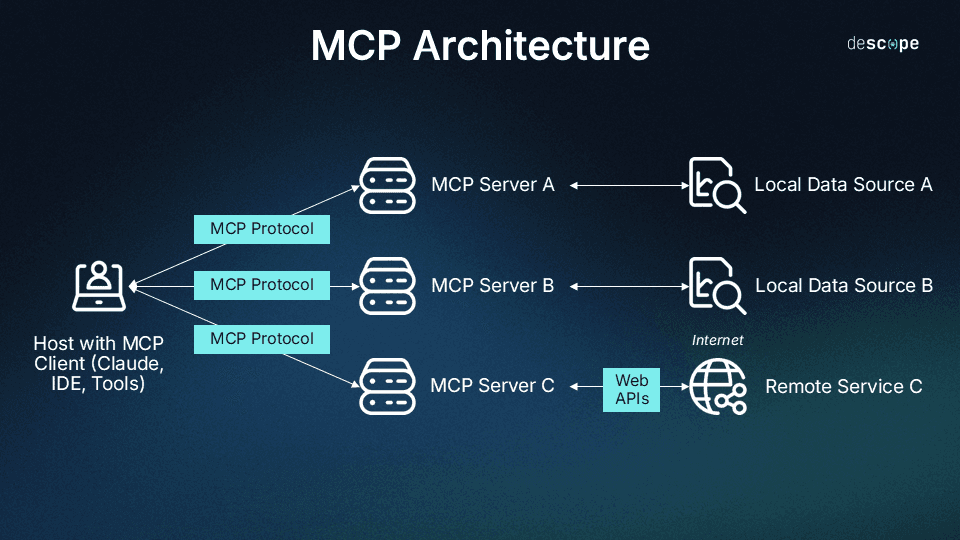

MCP Architecture: Client-Server Model
-
MCP Server: Lightweight programs that wrap external tools, resources, and prompts (APIs, databases, local files).
-
They expose these capabilities in a standardized format, acting as a bridge to the external system.
-
Can be built in various languages (Python, TypeScript) and communicate via
stdio or HTTP.
-
MCP Client: Part of a host application (e.g., Claude Desktop, IDE) that manages connections to MCP servers.
-
It handles connection management, capability discovery, and request/response forwarding.
-
MCP Protocol: The standardized layer between clients and servers, ensuring seamless and consistent communication, much like a "USB-C cable."
